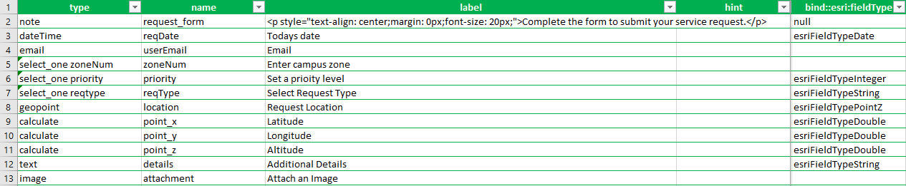

Created a survey in Survey123 Connect. The survey was created using SAWC needs in mind, collecting location based info, type of request, date, attachment. Although some of the information we had to add as questions are already collected in the metadata of the form, we needed to create fields for them to be stored, to keep the next step simplified in power automate. Publish the survey once its created. The following fields were created on the survey (note: these are not the exact field names)
We created an excel workbook that has three sheets, one for each level of priority. The fields in the sheets are the same as the survey fields, with the addition of the following:
First, we used Power Automate aka Flow which is a microsoft product in the Office 365 suite. The second software was called Make, which can be
viewed in 'Things we Tried'.
In Power Automate, we created a webhook that links to Survey123. Additionally, we created another webhook linking to a personal
Excel Onedrive account. The flow is triggered when a response is submitted to the linked survey. Next, an action is preformed to
convert the date/time from Epoch time to standard UTC time. Then a series of conditional statements are used to assess the priority
level of the survey, sorting each of the three priority levels into different tables in the excel spreadsheet. From there, we add a
row into the excel table, populating it with the feature attributes from the survey. We assign the string 'N' to the field assigned and
completed- to be later changed by the manager.
We created a PDF report that shows how many issues there have been in the time period. The PDF contains the title, the date converted into a mm/dd/yyyy format, and the number of incidents
The PDF was generated using a Microsoft Power Automate Flow on a recurring basis. The Flow would be set to run every day/week/month. The information was taken from the excel workbook created in Step 2. Variables named date and counter were created to store the current date and
a variable used for iterations. The date was converted from UTC to a mm/dd/yyyy format so that it could be tested against each row in the excel sheet. This ensures that only the rows with the date from the current month/day/week
are included in the report. An HTML document was used for formatting, which was then converted into a PDF. This PDF is sent in a link via email.
Depending on what is wanted on the report, the Power Automate Flow could also record the number of a certain type of problem, how many problems were resolved, and other counts. The model that has been created has
potential to generate more information.